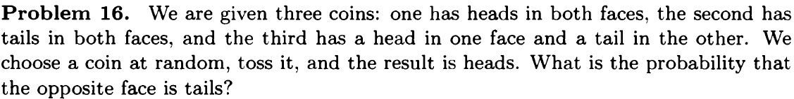
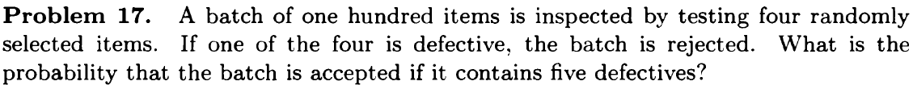
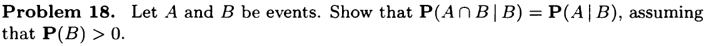

Conditioning and independence
Recitation Problems
- Conditional probability example. We roll two fair 6-sided dice. Each one of the 36 possible outcomes is assumed to be equally likely.
Find the probability that doubles are rolled (i.e., both dice have the same number).
Given that the roll results in a sum of 4 or less, find the conditional probability that doubles are rolled.
Find the probability that at least one die roll is a 6.
Given that the two dice land on different numbers, find the conditional probability that at least one die roll is a 6.
Solutions
6/36 = 1/6
2/6 = 1/3
11/36
10/30 = 1/3
- A chess tournament problem. This year's Belmont chess champion is to be selected by the following procedure. Bo and Ci, the leading challengers, first play a two-game match. If one of them wins both games, he gets to play a two-game second round with Al, the current champion. Al retains his championship unless a second round is required and the challenger beats Al in both games. If Al wins the initial game of the second round, no more games are played.
Furthermore, we know the following:
- The probability that Bo will beat Ci in any particular game is 0.6.
- The probability that Al will beat Bo in any particular game is 0.5.
- The probability that Al will beat Ci in any particular game is 0.7.
Assume no tie games are possible and all games are independent.
Part I. Determine the a priori probabilities that (a) the second round will be required. (b) Bo will win the first round. (c) Al will retain his championship this year.
Part II. Given that the second round is required, determine the conditional probabilities that (a) Bo is the surviving challenger. (b) Al retains his championship.
Part III. Given that the second round was required and that it comprised only one game, what is the conditional probability that it was Bo who won the first round?
Problems
Conditional Probability

Define events:
- \(C_1\): First coin (heads in both faces) was chosen
- \(C_2\): Second coin (tails in both faces) was chosen
- \(C_3\): Third coni (head/tail) was chosen
- \(H\): toss it and result is head
\[\begin{align*} \mathbf{P}(C_3 \mid H) &= \frac{\mathbf{P}(C_3) \cdot \mathbf{P}(H \mid C_3)}{\mathbf{P}(H)} \\ &= \frac{\mathbf{P}(C_3) \cdot \mathbf{P}(H \mid C_3)}{\sum\limits_{i=1}^{3}\mathbf{P}(C_i) \cdot \mathbf{P}(H \mid C_i)} \\ &= \frac{1/3 \cdot 1/2}{1/3 \cdot 1 + 1/3 \cdot 0 + 1/3 \cdot 1/2} \\ &= 1/3 \end{align*}\] 
Define events: * \(A\): batch is accepted (no defects in all 4 select items) * \(A_i\): ith item has no defect
Using multiplication rule:
\[\begin{align*} \mathbf{P}(A) &= \mathbf{P}(\cap_{i=1}^4 A_i) \\ &= \mathbf{P}(A_1)\mathbf{P}(A_2 \mid A_1)\mathbf{P}(A_3 \mid A_1 \cap A_2)\mathbf{P}(A_4 \mid A_1 \cap A_2 \cap A_3 \cap A_4) \\ &=\frac{95}{100} \cdot \frac{94}{99} \cdot \frac{93}{98} \cdot \frac{92}{97} \\ &= 0.812 \end{align*}\]

\[\begin{align*} \mathbf{P}(A \cap B \mid B) &= \frac{\mathbf{P}(A \cap B \cap B)}{\mathbf{P}(B)} \\ &= \frac{\mathbf{P}(A \cap B)}{\mathbf{P}(B)} \\ &= \mathbf{P}(A \mid B) \end{align*}\]